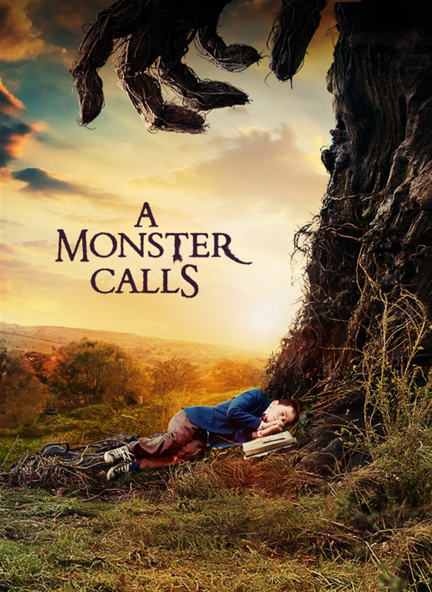

Saw
Horror || 1h 43m || 2004
Two men awaken to find themselves on the opposite sides of a dead body, each with specific instructions to kill the other or face consequences. These two are the latest victims of the Jigsaw Killer.
83% liked this film

Home Alone
Comedy || 1h 43m || 1990
Eight-year-old Kevin is accidentally left behind when his family leaves for France. At first, he's happy to be in charge; but when thieves try to break into his home, he puts up a fight like no other.
90% liked this film
The Boss Baby
Comedy || 1h 37m || 2017
Seven-year-old Tim gets jealous when his parents give all their attention to his little brother. Tim soon learns that the baby can talk and the two team up to foil the plans of the CEO of Puppy Co.
74% liked this film

John Wick
Action || 1h 41m || 2014
John Wick, a retired hitman, is forced to return to his old ways after a group of Russian gangsters steal his car and kill a puppy gifted to him by his late wife.
89% liked this film

A Quiet Place
Horror || 1h 30m || 2018
A family lives in a world inhabited by blind but sound sensitive creatures who are out to kill people. In order to survive, they are forced to use the sign language to communicate with each other.
80% liked this film
Soul
Family || 1h 40m || 2020
Joe is a middle-school band teacher whose life hasn't quite gone the way he expected. His true passion is jazz -- and he's good. But when he travels to another realm to help someone find their passion, he soon discovers what it means to have soul.
87% liked this film
The Killer's Game
Action || 1h 44m || 2024
Diagnosed with a terminal illness, top hit man Joe Flood decides to take matters into his own hands and take a hit out on himself. However, when the very men he hires also target his ex-girlfriend, he must fend off an army of assassins and win back the love of his life before it's too late.
81% liked this film

Edie
Adventure || 1h 42m || 2017
Edie, who is in her eighties, feels like her life is falling apart after the death of her husband. In order to take control again, she embarks on a climbing trip alone in the Scottish Highlands.
77% liked this film

The Lion King
Adventure || 1h 58m || 2019
Simba, a young lion prince, flees his kingdom after the murder of his father, Mufasa. Years later, a chance encounter with Nala, a lioness, causes him to return and take back what is rightfully his.
83% liked this film

A Monster Calls
Fantasy || 1h 48m || 2016
Conor, a twelve-year-old boy, encounters an ancient tree monster who proceeds to help him cope with his mother's terminal illness and being bullied in school.
65% liked this film

Frozen
Family || 1h 42m || 2013
Snow Queen Elsa inadvertently uses her power to make her kingdom experience constant wintriness. Her sister Anna teams up with mountaineer Kristoff and his reindeer to demolish the snowy spell.
80% liked this film
Scream
Horror || 1h 54m || 2022
Sam Carpenter returns to Woodsboro after her sister gets attacked by the Ghostface. She approaches Dewey Riley to help catch the killer, who warns Sidney and Gale.
69% liked this film